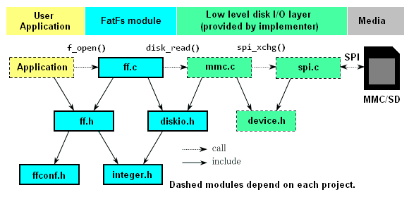
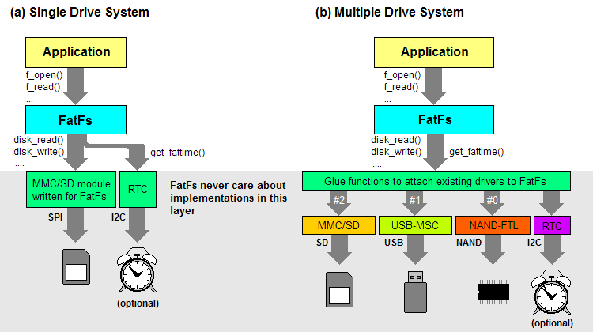
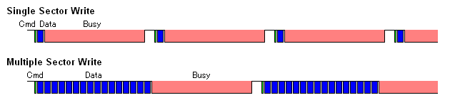

FatFsモジュール アプリケーション ノート
- ポーティングの際に配慮すべきこと
- 限界値
- メモリ使用量
- モジュール サイズの縮小
- 長いファイル名
- exFATファイルシステム
- Unicode入出力への対応
- リエントランシー
- 多重ファイル アクセス
- 効率的なファイル アクセス
- フラッシュ メモリの特性への配慮
- クリチカル セクション
- APIの拡張的使用例
- FatFsのライセンスについて
ポーティングの際に配慮すべきこと
ポーティングの際の前提条件
FatFsモジュールはポータビリティに関して次の点を前提としています。
- 処理系はANSI C準拠であること。
FatFsモジュールはANSI C(C89)準拠で記述されているので、普通のCコンパイラなら特に処理系依存になる点はありません。
- char/short/longのサイズは、それぞれ8/16/32ビットで、intは16または32ビットであること。
これについても、まっとうな処理系なら問題ないはずです。FatFsモジュールで使用されるサイズを明示する整数型が integer.h 内で定義されていますが、既存の定義と衝突した場合はユーザによって解決されなければなりません。
システム構成
下に示す依存関係図は、FatFsモジュール利用の組み込みシステムにおける代表的な構成を示します。

(a) FatFs用に書かれたディスク モジュールがある場合は、そのまま追加するだけです。 (b) しかし、多くの既存のディスク モジュールはそのAPIをFatFsに合わせるため、グルー関数が必要になるでしょう。

ユーザの作成する関数
ポーティング作業は、要求されるデバイス制御関数を用意することが全てで、それ以外にすることは何もありません。既に動作しているデバイス制御モジュールがあるなら、そのインターフェースをFatFsに合わせるかグルー関数を介してつなぐだけで済みますが、無い場合はほかから移植するか最初から書くかする必要があります。定義されている全ての関数が常に必要なわけではありません。例えば、リード オンリ構成では書き込み系関数は必要ありません。次の表に構成オプションと要求される関数の対応を示します。
| 必要な関数 | 必要となる条件 | 備考 |
|---|
disk_status
disk_initialize
disk_read | 常時 | ffsample.zip (サンプル)
その他web上に多数 |
disk_write
get_fattime
disk_ioctl (CTRL_SYNC) | _FS_READONLY == 0 |
disk_ioctl (GET_SECTOR_COUNT)
disk_ioctl (GET_BLOCK_SIZE) | _USE_MKFS == 1 |
| disk_ioctl (GET_SECTOR_SIZE) | _MAX_SS != _MIN_SS |
| disk_ioctl (CTRL_TRIM) | _USE_TRIM == 1 |
ff_convert
ff_wtoupper | _USE_LFN != 0 | option/unicode.cをプロジェクトに
加えればよい |
ff_cre_syncobj
ff_rel_grant
ff_req_grant
ff_del_syncobj | _FS_REENTRANT == 1 | option/syscall.c (サンプル) |
ff_mem_alloc
ff_mem_free | _USE_LFN == 3 |
限界値
- ファイルシステム: FAT12, FAT16, FAT32(r0.0) および exFAT(r1.0)。
- 同時オープン ファイル数: 無制限。(利用可能メモリによる)
- 同時マウント ボリューム数: 最大 10。
- ファイル サイズ: 最大 4GiB - 1 (FATボリューム) および、事実上無制限(exFATボリューム)。
- ボリューム サイズ: 最大 2TiB (512B/セクタ時)。
- クラスタ サイズ: 最大 128セクタ (FATボリューム) および、最大 16MiB (exFATボリューム)。
- セクタ サイズ: 512B, 1KiB, 2KiB, 4KiB。
メモリ使用量
次の表にいくつかのターゲットにおけるメモリ使用量の例を示します。テスト時の構成オプションはその下の通りです。数値の単位はバイトで、Vはボリューム数、Fは同時オープン ファイル数を示します。コンパイラの最適化オプションはコード サイズとしています。
| ARM7
32bit | ARM7
Thumb | CM3
Thumb-2 | AVR | H8/300H | PIC24 | RL78 | V850ES | SH-2A | RX600 | IA-32 |
|---|
| Compiler | GCC | GCC | GCC | GCC | CH38 | C30 | CC78K0R | CA850 | SHC | RXC | MSC |
| text (Full, R/W) | 10.4k | 6.8k | 6.3k | 12.4k | 9.8k | 11.1k | 12.8k | 8.6k | 8.9k | 6.4k | 8.5k |
| text (Min, R/W) | 6.8k | 4.6k | 4.3k | 8.2k | 6.7k | 7.6k | 9.1k | 6.0k | 5.9k | 4.5k | 5.9k |
| text (Full, R/O) | 4.8k | 3.1k | 2.8k | 5.6k | 4.6k | 5.3k | 6.3k | 4.0k | 3.9k | 3.0k | 3.9k |
| text (Min, R/O) | 3.6k | 2.4k | 2.3k | 4.4k | 3.5k | 4.0k | 4.9k | 3.3k | 3.0k | 2.4k | 3.1k |
| bss | V*4 + 2 | V*4 + 2 | V*4 + 2 | V*2 + 2 | V*4 + 2 | V*2 + 2 | V*2 + 2 | V*4 + 2 | V*4 + 2 | V*4 + 2 | V*4 + 2 |
Work area
(_FS_TINY == 0) | V*564
+ F*552 | V*564
+ F*552 | V*564
+ F*552 | V*560
+ F*546 | V*560
+ F*546 | V*560
+ F*546 | V*560
+ F*546 | V*564
+ F*552 | V*564
+ F*552 | V*564
+ F*552 | V*564
+ F*552 |
Work area
(_FS_TINY == 1) | V*564
+ F*40 | V*564
+ F*40 | V*564
+ F*40 | V*560
+ F*34 | V*560
+ F*34 | V*560
+ F*34 | V*560
+ F*34 | V*564
+ F*40 | V*564
+ F*40 | V*564
+ F*40 | V*564
+ F*40 |
FatFs R0.12b options:
_FS_READONLY 0 (R/W) or 1 (R/O)
_FS_MINIMIZE 0 (Full, with all basic functions) or 3 (Min, with fully minimized)
_FS_TINY 0 (Default) or 1 (Tiny file object)
And any other options are left not changed from default setting.
モジュール サイズの縮小
次の表は構成オプションの設定値によりどの機能が削除されるかを示します。API関数の行にxが無ければその関数は使用可能です。
| Function | _FS_
MINIMIZE | _FS_
READONLY | _USE_
STRFUNC | _FS_
RPATH | _USE_
FIND | _USE_
CHMOD | _USE_
EXPAND | _USE_
LABEL | _USE_
MKFS | _USE_
FORWARD | _MULTI_
PARTITION |
| 0 | 1 | 2 | 3 | 0 | 1 | 0 | 1 | 0 | 1 | 2 | 0 | 1 | 0 | 1 | 0 | 1 | 0 | 1 | 0 | 1 | 0 | 1 | 0 | 1 |
| f_mount | | | | | | | | | | | | | | | | | | | | | | | | | |
| f_open | | | | | | | | | | | | | | | | | | | | | | | | | |
| f_close | | | | | | | | | | | | | | | | | | | | | | | | | |
| f_read | | | | | | | | | | | | | | | | | | | | | | | | | |
| f_write | | | | | | x | | | | | | | | | | | | | | | | | | | |
| f_sync | | | | | | x | | | | | | | | | | | | | | | | | | | |
| f_lseek | | | | x | | | | | | | | | | | | | | | | | | | | | |
| f_opendir | | | x | x | | | | | | | | | | | | | | | | | | | | | |
| f_closedir | | | x | x | | | | | | | | | | | | | | | | | | | | | |
| f_readdir | | | x | x | | | | | | | | | | | | | | | | | | | | | |
| f_findfirst | | | x | x | | | | | | | | x | | | | | | | | | | | | | |
| f_findnext | | | x | x | | | | | | | | x | | | | | | | | | | | | | |
| f_stat | | x | x | x | | | | | | | | | | | | | | | | | | | | | |
| f_getfree | | x | x | x | | x | | | | | | | | | | | | | | | | | | | |
| f_truncate | | x | x | x | | x | | | | | | | | | | | | | | | | | | | |
| f_unlink | | x | x | x | | x | | | | | | | | | | | | | | | | | | | |
| f_mkdir | | x | x | x | | x | | | | | | | | | | | | | | | | | | | |
| f_rename | | x | x | x | | x | | | | | | | | | | | | | | | | | | | |
| f_chdir | | | | | | | | | x | | | | | | | | | | | | | | | | |
| f_chdrive | | | | | | | | | x | | | | | | | | | | | | | | | | |
| f_getcwd | | | | | | | | | x | x | | | | | | | | | | | | | | | |
| f_chmod | | | | | | x | | | | | | | | x | | | | | | | | | | | |
| f_utime | | | | | | x | | | | | | | | x | | | | | | | | | | | |
| f_getlabel | | | | | | | | | | | | | | | | | | x | | | | | | | |
| f_setlabel | | | | | | x | | | | | | | | | | | | x | | | | | | | |
| f_expand | | | | | | x | | | | | | | | | | x | | | | | | | | | |
| f_forward | | | | | | | | | | | | | | | | | | | | | | x | | | |
| f_mkfs | | | | | | x | | | | | | | | | | | | | | x | | | | | |
| f_fdisk | | | | | | x | | | | | | | | | | | | | | x | | | | x | |
| f_putc | | | | | | x | x | | | | | | | | | | | | | | | | | | |
| f_puts | | | | | | x | x | | | | | | | | | | | | | | | | | | |
| f_printf | | | | | | x | x | | | | | | | | | | | | | | | | | | |
| f_gets | | | | | | | x | | | | | | | | | | | | | | | | | | |
長いファイル名
FatFsモジュールは、長いファイル名(LFN)をサポートします。ファイルに付けられた2つの異なる名前(短いファル名と長いファイル名)は、f_readdir関数を除くファイル操作関数において透過です。デフォルト構成では、LFN機能はOFFになっています。LFN機能を有効にするには、_USE_LFNを1,2または3に設定し、option/unicode.cをプロジェクトに追加します。LFN機能は、加えてある程度のワーク エリア(LFN操作バッファ)を必要とします。バッファ長は使用できるメモリに応じて_MAX_LFNで構成されることができます。LFNの長さは最大255文字に達するので、LFN完全対応のためには_MAX_LFNは255に設定されるべきです。与えられたファイル名に対してバッファ長が不足した場合、ファイル関数はFR_INVALID_NAMEで失敗します。
ファイル関数に再入を行う条件の下でLFN機能を使用する場合は、_USE_LFNは2または3に設定されなければなりません。この場合、ファイル関数はワーク エリアを動的に確保(スタックまたはヒープ)します。ワーク エリアのサイズは、(_MAX_LFN + 1) * 2バイト(exFAT利用時はさらに+608バイト)になるので、スタック等のサイズはそれを考慮した十分な余裕がなければなりません。
LFN構成 at CM3
| _CODE_PAGE | 追加コード |
|---|
| SBCS | +2.8K |
| 932(Shift_JIS) | +62.6k |
| 936(GBK) | +177k |
| 949(Korean) | +139k |
| 950(Big5) | +111k |
LFN機能の上手な使い方は、それを使わないということです。実際、組み込み用途ではLFN機能がどうしても必要になるということはほとんど無いはずです。LFNを有効にすると、選択されたコード ページに応じてモジュール サイズが増大します。右の表に各コード ページにおけるLFNを有効にしたときのモジュール サイズの違いを示します。特に、CJK地域では数万の文字が使われていますが、不幸なことにそれは巨大なOEM－Unicode相互変換テーブルを要求し、モジュール サイズは劇的に増大します。その結果、それらのコード ページにおいてLFNを有効にしたFatFsモジュールは、多くの8ビット マイコンにインプリメントすることができません。
LFN機能のハードルはそれだけではありません。マイクロソフト社はFATファイルシステムについていくつかの特許を保有しています。いずれもLFN機能の実装に関するもので、その利用に対して$0.25/unitのライセンス料を要求しています。このため、商用製品でLFN機能を利用する場合は、製品の最終仕向地によってはライセンスが必要になります。最近のFAT32ドライバの多くはLFN機能を含んでいるため、それらの使用に当たってライセンスが必要になりますが、FatFsは構成オプションでLFN機能を任意にON/OFFできるため、無効にしてライセンス問題を回避することもできます。
Unicode入出力への対応
FatFs API上におけるファイル名等の文字列データの入出力は、デフォルトではANSI/OEMコードで行われますが、これをUnicode(UTF-16)に切り替えることもできます(_LFN_UNICODEで設定)。つまり、これはFatFsがLFN機能に完全対応していることを意味します。Unicodeのファイル名に関する詳細は、パス名のフォーマットを参照してください。
exFATファイルシステム
exFAT(Microsoft's Extended File Allocation Table)ファイルシステムは、既に組み込みシステムや情報家電で広く使われているFATファイルシステムを置き換える目的で開発されました。exFATは、64GiB以上のSDメモリ カードで標準ファイルシステムに採用されるなど、FATに並びリムーバブル メディアの標準ファイルシステムの一つとなりつつあります。
exFATボリュームでは、FATボリュームで制約となっていた4GiB以上のサイズのファイルを扱え、ファイルシステムのオーバーヘッド(特にファイル アロケーション ディレイ)も大幅に低減され、書き込みスループットがFATより向上しています。しかし、現リビジョンのFatFsでは、実装上の理由から不連続ファイルへのサイズ拡大を伴う書き込み時のとき、スループットがFATより低下します。f_expand関数による連続領域の割り当て機能は、この問題の回避に有効かもしれません。
exFATはマイクロソフト社が開発したものなので、マイクロソフト社はexFATについていくつかの特許を保有しています。FatFsのexFAT機能は、それの US. Pat. App. Pub. No. 2009/0164440 A1 に基づいた実装です。このため、商用製品でexFAT機能を利用する場合、製品の最終仕向地によってはライセンスが必要になります。最近のFATドライバの多くはexFAT機能を含んでいるため、それらの使用に当たってライセンスが必要になりますが、FatFsは構成オプションでexFAT機能を任意にON/OFFできるため、無効にしてライセンス問題を回避することもできます。
exFATを有効にすると、FatFsモジュールのC89互換は失われます(64ビット整数型が必要なため)。
リエントランシー
互いに異なるボリュームに対するファイル操作は、_USE_LFN == 1を除いて構成にかかわらずリエントラントで、常に同時平行に動作できます。
同じボリュームに対してはデフォルトではリエントラントではありませんが、_FS_REENTRANTでリエントラント(スレッド セーフ)にすることはできます。この場合、OS依存の同期オブジェクト操作関数ff_cre_syncobj, ff_del_syncobj, ff_req_grant, ff_rel_grant関数もまたプロジェクトに追加されなければなりません。サンプル コードと解説はoption/syncobj.cにあります。
この場合、あるタスクがボリュームを使用中に他のタスクからそのボリュームに対するファイル関数が呼び出されると、そのアクセスは先のタスクがファイル関数を抜けるまでサスペンドされます。待ち時間が_TIMEOUTで指定された期間を越えた場合、その関数はFR_TIMEOUTでアボートします。いくつかのRTOSではタイムアウト機能はサポートされないかも知れません。
ひとつの例外がf_mount, f_mkfs, f_fdisk関数にあります。これらのボリューム制御関数は同じボリューム(または関連する物理ドライブ)に対してリエントラントではありません。これらの関数を使用するときは、アプリケーション レベルで排他制御しなければなりません。
注: このセクションはFatFsモジュールそれ自体のリエントランシーについて説明しています。_FS_REENTRANTは、各ファイルシステム オブジェクトの排他制御を行うのみで、下位のディスク関数への再入を防止するものではありません。たとえば、シングル ボリューム構成ではdisk_status関数のみ再入される可能性があり、マルチ ボリューム構成ではどのディスク関数も再入される可能性があります。このように、複数のタスクから同時にFatFs APIを使う条件では、ディスクI/Oモジュールはスレッド セーフである必要があります。
多重ファイル アクセス
FatFsモジュールではデフォルトでは多重アクセス制御機能をサポートしていません。ファイルに対する多重アクセスは、そのアクセス モードによって制限されます。一つのファイルに対する多重オープンは、それらが全てリード モードのときに限って許可されます。書き込みモードを含む多重オープン、また開かれているファイルに対するリネームや削除を行ってはなりません。さもないと、そのボリュームのFAT構造が破壊される可能性があります。
_FS_LOCKに1以上の値(値は同時に管理できるファイル数)をセットすることで多重アクセス制御機能が有効になり、ファイル単位のアクセス制御を自動で行うこともできます。この場合、上記のルールを破ったオープン・リネーム・削除を試みると、その関数はFR_LOCKEDで失敗します。また、_FS_LOCKを越える数のファイルやサブ ディレクトリを同時にオープンしようとすると、FR_TOO_MANY_OPEN_FILESで失敗します。
効率的なファイル アクセス
小規模な組込システムでのファイルの読み書きにおける効率の良いアクセスのため、アプリケーション プログラマはFatFsモジュールの中でどのような処理が行われているか考慮すべきです。ストレージ上のデータはf_read関数により次のシーケンスで転送されます。
図1. セクタ ミスアラインド リード (ショート)

図2. セクタ ミスアラインド リード (ロング)

図3. セクタ アラインド リード

ファイルI/Oバッファはセクタの一部のデータを読み書きするためのセクタ バッファを意味します。セクタ バッファは、それぞれのファイル オブジェクト内のプライベート セクタ バッファまたはファイルシステム オブジェクト内の共有セクタ バッファのどちらかです。バッファ構成オプションの_FS_TINYは、データ転送にどちらを使うかを決定します。タイニー バッファ(1)が選択されるとデータ メモリの消費はそれぞれのファイル オブジェクトで_MAX_SSバイト減少されます。この場合、FatFsモジュールはファイル データの転送とFAT/ディレクトリ アクセスにファイルシステム オブジェクト内のセクタ バッファだけを使用します。タイニー バッファの欠点は、セクタ バッファにキャッシュされたFATデータがファイル データの転送により失われ、クラスタ境界の毎にリロードされなければならないことです。でも、悪くない性能と少ないメモリ消費の視点から多くのアプリケーションに適するでしょう。
図1はセクタの一部のデータがファイルI/Oバッファを経由で転送されることを示します。図2に示される長いデータの転送では、転送データの中間の1セクタまたはそれ以上のセクタにまたがる転送データがアプリケーション バッファに直接転送されています。図3は転送データ全体がセクタ境界にアライメントされている場合を示しています。この場合、ファイルI/Oバッファは使用されません。直接転送においては最大の範囲のセクタがdisk_read関数で一度に読み込まれますが、クラスタ境界を越えるマルチ セクタ転送はそれが隣接であっても行われません。
このように、セクタにアライメントしたファイルの読み書きへの配慮はバッファ経由のデータ転送を避け、読み書き性能は改善されるでしょう。その効果に加え、タイニー構成でキャッシュされたFATデータがファイル データの転送によりフラッシュされず、非タイニー構成と同じ性能を小さなメモリ フットプリントで達成できます。
フラッシュ メモリの特性への配慮
HDDなどのディスク メディアとは異なり、SDCやCFCなどのフラッシュ メモリ メディアの性能を引き出すには、その特性を意識した制御が必要になります。
マルチ セクタ書き込み
図6. マルチ/シングル セクタ ライトの比較

フラッシュ メモリ メディアの書き込み速度はシングル セクタ書き込みの時に最も低いものになり、一回のトランザクションで転送されるセクタ数が大きくなるほど書き込み速度は向上します(図6)。この効果はバス速度が高速になるほど大きく、10倍以上の差が現れることも珍しくありません。テスト結果は、マルチ セクタ書き込み(W:16K, 32 sectors)がシングル セクタ書き込み(W:100, 1 sector)よりどの程度速いかを明確に示しています。大容量メディアほどシングル セクタ書き込みが遅くなる点もまた重要です。書き込みトランザクションの回数はまた、メディアの寿命にも影響してきます。つまり、同じ量のデータを書き込む場合、図6上のシングル セクタ書き込みは、図6下のマルチ セクタ書き込みに比べて16倍早くフラッシュ メモリ メディアを消耗させてしまうということです。
このように、アプリケーションはなるべく大きなブロック(クラスタ サイズまたは2の累乗セクタ境界にアライメントした)で読み書きを行う必要があります。もちろん、アプリケーションからメディアに至る全てのレイヤがマルチ セクタ転送に対応していないと意味がありません。残念ながら、既存のオープン ソースのドライバの多くはマルチ セクタ転送に未対応です。なお、FatFsモジュールおよびサンプル ドライバはマルチ セクタ転送に対応しています。
明示的なメモリ消去
通常のファイル消去では、記録されたデータに対して何らかの処理が行われるわけではなく、単にFAT上にその領域を未使用と記録しているだけです。このため、ファイルが消去されたあともそれらは有効なデータ ブロックとしてフラッシュ メモリ上に残ります。そこで、ファイルを消去するとき、占有していたデータ セクタを明示的に消去(つまり未使用ブロックにする)することにより、メディア内の空きブロックを増やすことができます。これにより、次にそのブロックに書き込むときの消去動作が無くなり、書き込み性能が向上する可能性があります。また、ウェアレベリングに使えるブロックが増え、メディアの耐久性も向上するかも知れません。この機能を有効にするには、_USE_TRIMに1を設定します。これはフラッシュ メモリ ドライブの内部動作に期待した制御なので、効果があるとは限りません。また、ファイル消去の時間が延びることも考慮に入れるべきです。
クリチカル セクション
ストレージ上のFAT構造を操作している途中で、停電、不正なメディアの取り外し、回復不能なデータ エラー等の障害が発生すると、処理が中途半端な状態で中断され、その結果としてFATボリュームの構造が破壊される可能性があります。次にFatFsモジュールにおけるクリチカル セクションと、その間の障害により起きうるエラーの状態を示します。
図4. 長いクリチカル セクション

図5. 最小化したクリチカル セクション

赤で示したセクションを実行中に中断が発生した場合、クロス リンクが発生して操作中のファイルやディレクトリが失われる可能性があります。黄色で示したセクションを実行中に中断が発生した場合、次のうちいずれかまたは複数の結果が生じる可能性があります。
- ファイルの一部を書き換え中: 書き換えが中途半端な状態となり、結果データが破壊される。
- 追記モードでデータ記録中: ファイルが記録開始の前の状態に戻る。
- 新規作成したファイルに記録中: そのファイルが消える。
- 新規または上書きで作成したファイルに記録中: ファイルの長さがゼロになって残る。
- これらの障害の結果、ロスト クラスタが発生してボリュームの利用効率が悪化する。
いずれの場合も操作の対象でないファイルには影響はありません。これらのクリチカル セクションは、ファイルを書き込みモードで開いている時間を最小限にするか、f_sync関数を適宜使用することで図5のようにリスクを最小化することができます。
FatFsのライセンスについて
FatFsは、作者(ChaN)の個人プロジェクトとして開発されています。現在までのリビジョンにおいてコントリビューターはいないため、作者以外の書いたソース コードは含まれません。ソース ファイルにライセンス条件が記述されているので、利用の際はそれに従うこと。原文は英語ですが、参考までに以下に日本語訳を示しておきます。
/*----------------------------------------------------------------------------/
/ FatFs - Generic FAT file system module R0.12a /
/-----------------------------------------------------------------------------/
/
/ Copyright (C) 2016, ChaN, all right reserved.
/
/ FatFsモジュールはオープンソースソフトウェアです。FatFsの再配布および使用は、
/ ソースコードかバイナリ形式か、また変更の有無にかかわらず、次の条件が満たされ
/ る場合に限り許可されます。
/
/ 1. ソースコードで再配布するときは、その中に上記の著作権表示、この条件、および
/ 次の免責事項を保持すること。
/
/ このソフトウェアは、著作権者らおよびコントリビューターらによって現状のまま
/ 提供されており、いかなる保証もありません。
/ 著作権者もコントリビューターも、このソフトウェアの使用により発生するいかなる
/ 損害についても、責任を負いません。
/----------------------------------------------------------------------------*/
このようにFatFsはBSDライクなライセンスとしていますが、一つ大きな違いがあります。FatFsは主に組み込み向けとして開発されたため、バイナリ形式(ソース コードを含まない形式全て)での再配布については、商用での使いやすさを考慮して配布時の条件を設けていません。つまり、バイナリ配布の場合は、FatFsおよびそのライセンス文書についてドキュメントに明記してもしなくてもかまいません。これは、一条項BSDライセンスと等価ということです。もちろん、GNU GPLなどほとんど全てのオープン ソース ライセンスの下のプロジェクトにおいて共存可能です。FatFsからフォークを作成し公開する場合は、矛盾しない他のオープン ソース ライセンス(GNU GPLや修正BSDライセンスなど)に変更することも可能です。
{kind=link}